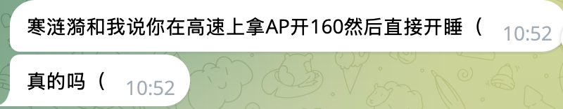

绿色杯子千尋醬喵～😦😨😰🥵♻️
@qianxunchan
@CatherinaMeow ap？我靠谁开辅助驾驶敢睡觉啊，fsd14正式版的监督版才敢睡吧，会出事呢咪🥺

Catherina（赛博咬人黑猫）
@CatherinaMeow
首先 特斯拉的AP在140就会自动退出
其次 我的车开160续航掉的很快 非常不经济 我正常巡航很少开这个速度
再次 我又没买配重块 或者其他的东西防止检测 特斯拉有疲劳监测 我怎么睡（）我开的又不是遥遥领先
现在这谣言怎么越传越离谱啊 放过我（（（（（ https://t.co/v1C2JKkgku